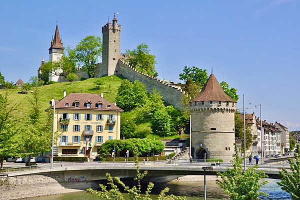
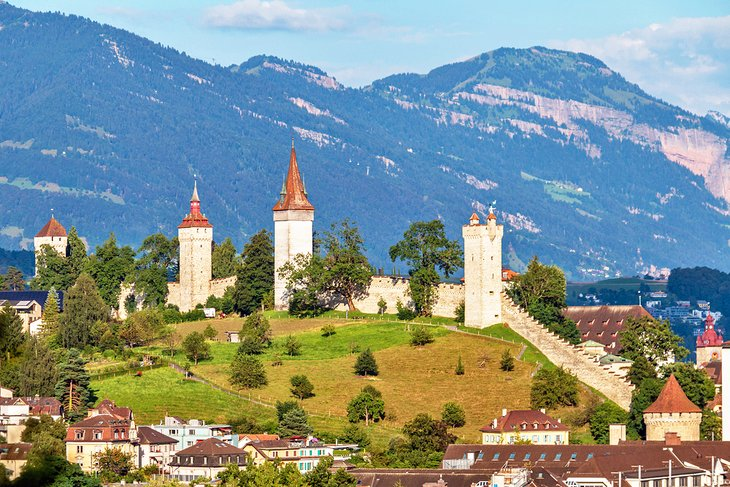
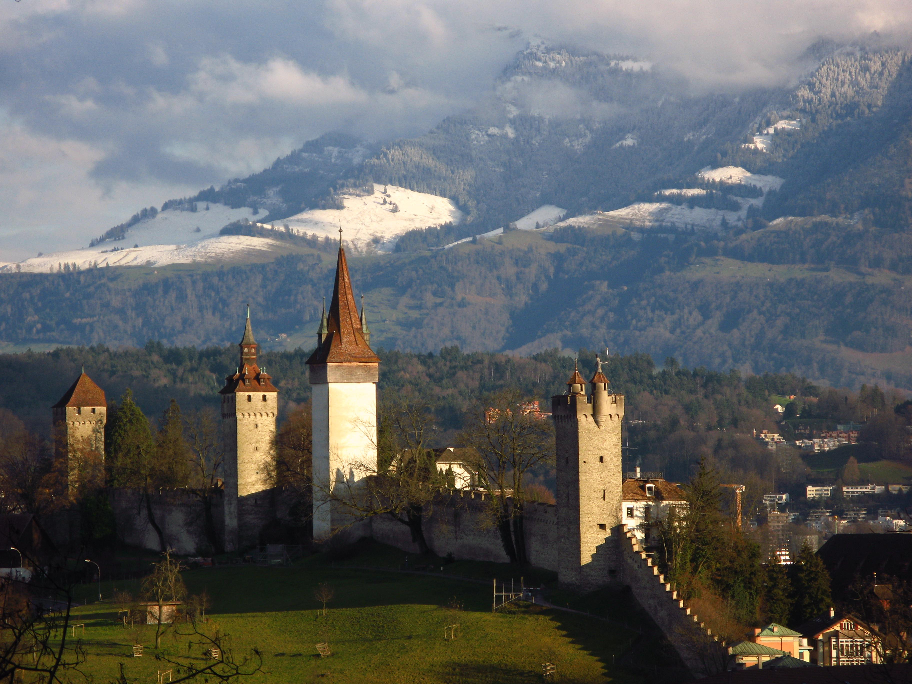

The Museggmauer, or Musegg Wall, stands proudly above Lucerne as a reminder of the city’s medieval origins. Built in the 14th century, it once formed part of the city’s fortifications and still dominates the skyline today.
Stretching over 800 meters, the wall is lined with nine distinctive towers, each with its own story and character. Several towers are open to visitors, offering breathtaking views over Lucerne, Lake Lucerne, and the Alps.
The Museggmauer remains remarkably well-preserved, symbolizing Lucerne’s enduring history and craftsmanship. Walking along its ancient path feels like stepping back in time — a quiet journey through the city’s living heritage.
